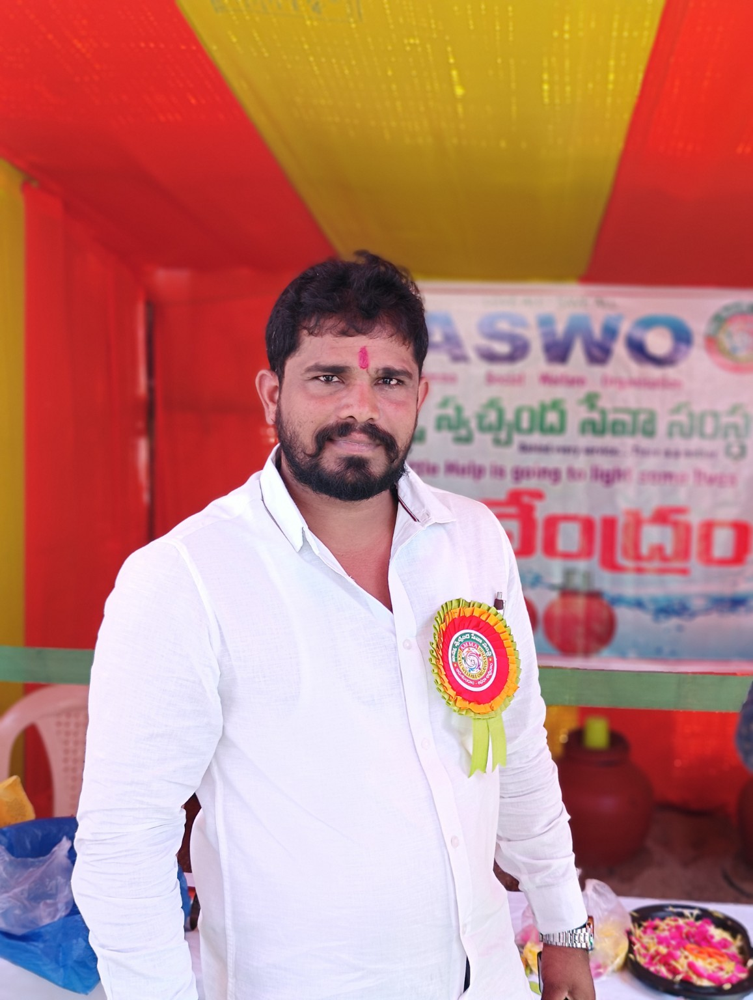

Community Welfare
Community support and welfare initiatives for people who need assistance.
SERVING WITH COMPASSION • CREATING CHANGE
AMMA Social Welfare Organisation is committed to community welfare, dignity, opportunity and positive social change.
WHO WE ARE
AMMA Social Welfare Organisation is a community-focused organisation dedicated to social welfare and inclusive development.
We work to support people in need through community service, welfare activities, outreach programmes, humanitarian assistance and initiatives that create positive social change.
Learn more about AMMA →LEADERSHIP

Leading AMMA Social Welfare Organisation with compassion, service and a commitment to helping people in need.
Through dedicated community service and welfare initiatives, AMMA Social Welfare Organisation works towards creating a stronger, caring and inclusive community.
WHAT WE DO
Our initiatives focus on practical support, community welfare and meaningful service.
Community support and welfare initiatives for people who need assistance.
Educational support, awareness programmes and opportunities.
Health awareness and wellbeing initiatives for communities.
Relief, outreach, campaigns and other social-service activities.
OUR IMPACT
Together, small acts of compassion can create lasting change.
GALLERY
Moments from AMMA Social Welfare Organisation's community service, outreach, support and recognition activities.

Direct community support and assistance

Providing drinking water during community outreach

Supporting voluntary blood donation initiatives

Community service and support for police personnel

Reaching people and families in the community

Working together to support people in need

Recognising service and contribution

Celebrating community contributions

Supporting beneficiaries through community initiatives

Community participation and service

People coming together for social welfare

Honouring meaningful contributions

Community service and outreach
VIDEOS
Follow AMMA Social Welfare Organisation's activities and community initiatives.
Videos and community service highlights can be added here.
CONTACT
Whether you want to volunteer, support our work or learn more about our initiatives, we would be happy to hear from you.
Community welfare • Social service • Humanitarian support
Reach out to us to learn more about our programmes, activities and opportunities to support the community.